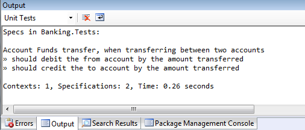

Here is a preview of a new feature that is planned for SharpDevelop - integrated support for Machine.Specifications.
Machine.Specifications, or MSpec for short, is a Behaviour Driven Development framework for .NET created by Aaron Jensen which takes its inspiration from SpecUnit.NET and RSpec.
Support for MSpec has been added thanks to Tomasz Tretkowski.
So let us take a look at how the MSpec integration works in SharpDevelop.
The first thing you will need to do is add a reference to MSpec in the project that will contain your specifications. The easiest way to do this is to use NuGet. Select your project, right click and select Manage Packages.
Search for the Machine.Specifications package and then click the Add button to add the NuGet package to your project.
This will add a Machine.Specifications assembly reference to your project.
Now let us create our first specification. We are going to create a specification which is based on an example provided with the MSpec source code. The specification is for transferring an amount of money between two bank accounts and is shown below.
using System;
using Machine.Specifications;
namespace Banking.Tests
{
[Subject(typeof(Account), "Funds transfer")]
public class when_transferring_between_two_accounts
{
static Account fromAccount;
static Account toAccount;
Establish context = () => {
fromAccount = new Account { Balance = 1m };
toAccount = new Account { Balance = 1m };
};
Because of = () =>
fromAccount.Transfer(1m, toAccount);
It should_debit_the_from_account_by_the_amount_transferred = () =>
fromAccount.Balance.ShouldEqual(0m);
It should_credit_the_to_account_by_the_amount_transferred = () =>
toAccount.Balance.ShouldEqual(2m);
}
}
MSpec uses Establish/Because/It which is equivalent to Given/When/Then that is used with SpecFlow. Establish is used to setup the initial state. Because is used to define the event/action that you are testing. It is used to test the final state and see if it matches what is expected.
The Account class that is used by this specification is shown below.
using System;
namespace Banking
{
public class Account
{
public decimal Balance { get; set; }
public void Transfer(decimal amount, Account toAccount)
{
}
}
}
Specifications are displayed in the Unit Tests window. This window can be opened by selecting Unit Tests from the View | Tools menu. The specification we have defined will be displayed in the Unit Test window as shown below.
The Unit Tests window will update as the specification is written in the same way it does when you are writing NUnit tests.
To run MSpec you can right click a specification and select Run tests or you can click the toolbar buttons at the top of the Unit Tests window.
Failures will be highlighted in Red in the Unit Tests window.
The output from MSpec is displayed in the Output window.
Failures are also added to the Errors window. Clicking on an error will take you directly to the source code for the failing test.
Now we have to fix the failures by implementing the Account's Transfer method. The updated Transfer method is shown below:
public void Transfer(decimal amount, Account toAccount)
{
Balance -= amount;
toAccount.Balance += amount;
}
After making this change and running MSpec again everything passes, as shown below.

That completes the quick introduction to using MSpec with SharpDevelop. Now let us take a look at MSpec Behaviours.
MSpec Behaviours are a way to group together a set of tests that you want to re-use with different contexts. To do this you create a separate class, add a Behaviors attribute to it, and move your tests into that class. This behaviour class is then referenced by using the Behaves_like syntax. An example taken from the MSpec examples is shown below.
using System;
using Machine.Specifications;
namespace Banking.Tests
{
[Subject("Date time parsing")]
public class when_a_date_is_parsed_with_the_regular_expression_parser
: DateTimeParsingSpecs
{
Establish context = () =>
Parser = new RegexParser();
Because of = () =>
ParsedDate = Parser.Parse("2009/01/21");
Behaves_like<DateTimeParsingBehavior> a_date_time_parser;
}
[Subject("Date time parsing")]
public class when_a_date_is_parsed_by_the_infrastructure
: DateTimeParsingSpecs
{
Establish context = () =>
Parser = new InfrastructureParser();
Because of = () =>
ParsedDate = Parser.Parse("2009/01/21");
Behaves_like<DateTimeParsingBehavior> a_date_time_parser;
}
public abstract class DateTimeParsingSpecs
{
protected static DateTime ParsedDate;
protected static IParser Parser;
}
[Behaviors]
public class DateTimeParsingBehavior
{
protected static DateTime ParsedDate;
It should_parse_the_expected_date = () =>
ParsedDate.ShouldEqual(new DateTime(2009, 1, 21));
}
}
Here the behaviour of the parser returning a particular date has been extracted and re-used across two different contexts.
SharpDevelop is aware of MSpec behaviours and will display the underlying tests. The date time parser specifications above will be displayed in the Unit Tests window as shown below.
For further details on MSpec behaviours take a look at the Behaviours in MSpec post by James Gregory.
Here is a selection of links to further information on MSpec that you may find useful.
Introducing MSpec - Aaron Jensen's post that first introduced MSpec.
Learning BDD - If you prefer to learn by watching a video check out Rob Conery's BDD screencast where he discusses BDD and also covers MSpec.
Make BDD your BFF - Rob Conery walks through BDD with MSpec.